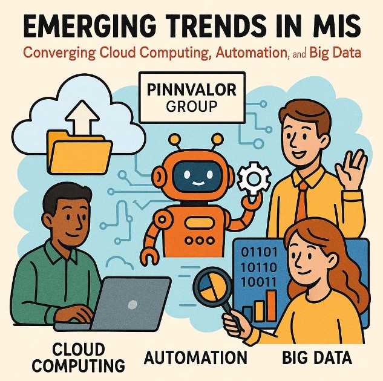

Emerging Trends in MIS: Converging Cloud Computing, Automation, and Big Data
In today’s fast-paced business environment, organizations are constantly searching for ways to manage and utilize data more effectively. Management Information Systems (MIS) play a critical role in this by helping businesses process vast amounts of data to inform decision-making. As technology continues to advance, a new wave of innovation is transforming the way MIS functions, driven by the convergence of three powerful trends: cloud computing, automation, and big data. Together, these technologies are reshaping how businesses manage, process, and analyze data, resulting in enhanced operational efficiency, better decision-making, and improved business outcomes.
Cloud computing, automation, and big data are the trifecta of modern MIS—empowering businesses to process data faster, uncover actionable insights, and transform decision-making for long-term success.
The Role of Cloud Computing in Modern MIS
Cloud computing has become the backbone of modern MIS infrastructure. It allows businesses to store and process large volumes of data without the need for extensive physical hardware. Cloud-based platforms such as Amazon Web Services (AWS), Microsoft Azure, and Google Cloud provide scalable, secure, and cost-effective solutions that make it easier for organizations to manage their data.
Cloud computing enables businesses to access real-time data from anywhere, promoting collaboration and flexibility. It also eliminates the burden of maintaining expensive in-house IT infrastructure and enables businesses to scale their systems based on demand. This is particularly beneficial for organizations looking to optimize their MIS systems, as it ensures seamless data storage and accessibility without compromising performance or security.
Automation: Enhancing Efficiency and Accuracy
The automation of routine tasks within MIS is a game-changer for businesses. Robotic Process Automation (RPA), machine learning algorithms, and AI-driven tools are now integrated into MIS systems to handle repetitive tasks such as data entry, reporting, and analysis. This reduces the burden on human resources, allowing employees to focus on more strategic tasks that require critical thinking.
By automating data collection, processing, and reporting, businesses can generate real-time insights and reports with minimal delay. Moreover, automation minimizes human errors and ensures that data is processed accurately and consistently. As a result, companies can make better-informed decisions, faster.
Big Data: Unlocking Valuable Insights for Better Decision Making
Big data refers to the enormous volume, variety, and velocity of data generated daily by businesses, consumers, and devices. In the context of MIS, big data enables organizations to analyze vast datasets and extract valuable insights that were previously difficult to uncover. The use of big data tools such as Hadoop, Spark, and NoSQL databases allows businesses to process both structured and unstructured data in real-time, unlocking new opportunities for innovation and growth.
By leveraging big data, businesses can gain insights into customer behavior, operational efficiencies, and market trends that can inform decision-making at every level of the organization. These insights can lead to more personalized customer experiences, optimized supply chains, and better-targeted marketing strategies. The ability to process big data is no longer a luxury; it is a necessity for organizations looking to stay competitive in today’s data-driven world.
The Synergy Between Cloud Computing, Automation, and Big Data
The convergence of cloud computing, automation, and big data is creating a more powerful, integrated MIS ecosystem. These technologies complement each other, driving efficiencies and unlocking new potential:
- Cloud computing provides the scalable infrastructure to store and process large datasets.
- Automation accelerates the processing and reporting of data, ensuring that businesses can respond to changes in real-time.
- Big data uncovers patterns, trends, and insights from vast datasets, providing businesses with valuable information for decision-making.
By integrating these technologies, businesses can achieve a level of efficiency and agility that was once thought impossible. Organizations no longer need to rely on slow, manual processes to manage their data; instead, they can leverage cloud platforms and automation to quickly collect, analyze, and act on data in real-time.
The Future of MIS: What’s Next?
As cloud computing, automation, and big data continue to evolve, so will the capabilities of MIS. The integration of artificial intelligence (AI), machine learning, and advanced analytics will further enhance the ability of MIS systems to provide real-time, actionable insights. These advancements will allow businesses to move from descriptive and diagnostic analytics to predictive and prescriptive analytics, enabling them to not only understand what has happened but also to forecast future trends and make recommendations for action.
In the coming years, MIS will become even more intelligent and responsive, with self-learning systems that can anticipate business needs and automatically adapt to changing circumstances. Organizations that embrace these technologies will be better positioned to make faster, data-driven decisions and maintain a competitive edge in their respective industries.
Conclusion: Harnessing the Power of Convergence
The convergence of cloud computing, automation, and big data is transforming the landscape of Management Information Systems. Together, these technologies are making it easier for businesses to collect, process, and analyze data more efficiently, leading to improved decision-making, operational efficiency, and business outcomes.
As these technologies continue to evolve, businesses that adopt them will gain a significant advantage in today’s highly competitive and data-driven business environment. The future of MIS is bright, and organizations that leverage the power of cloud computing, automation, and big data will be at the forefront of innovation and success.
LinkedIn Caption Example:
🚀 Emerging Trends in MIS: Converging Cloud Computing, Automation, and Big Data
The convergence of cloud computing, automation, and big data is revolutionizing how businesses manage, process, and leverage data for smarter decision-making. In this fast-paced, data-driven world, companies must adopt these technologies to stay competitive.
Key Insights:
- Cloud computing provides scalable data storage and accessibility.
- Automation enhances efficiency, reducing manual errors and accelerating data processing.
- Big data uncovers actionable insights for smarter business strategies.
The future of MIS is bright—those who embrace this convergence will lead the way. 🚀
#MIS #CloudComputing #Automation #BigData #FutureOfBusiness #DataDriven #Innovation